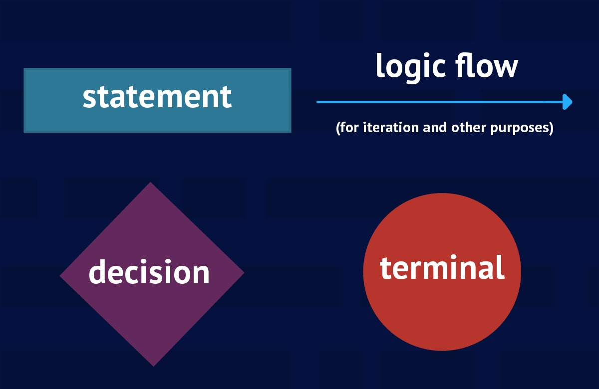
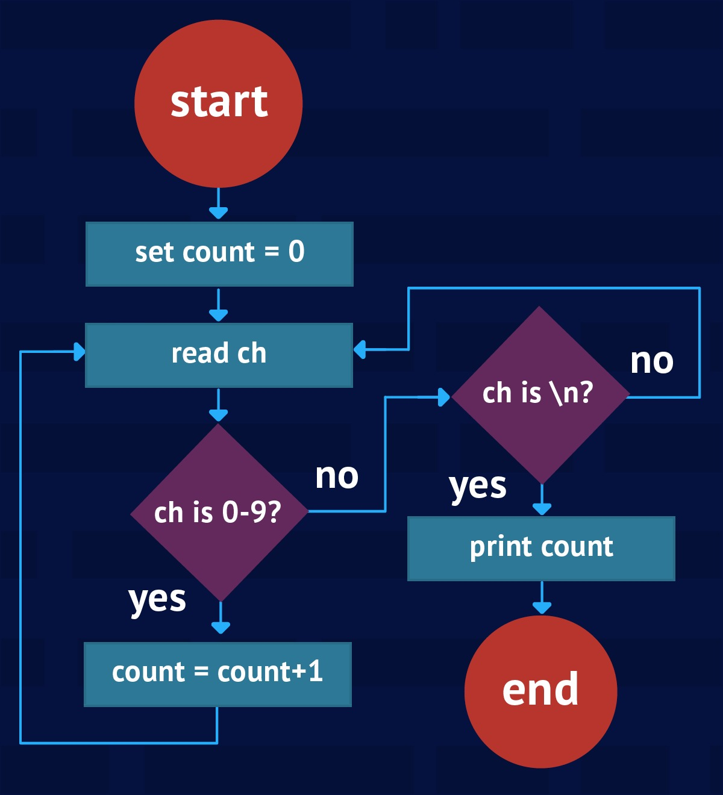
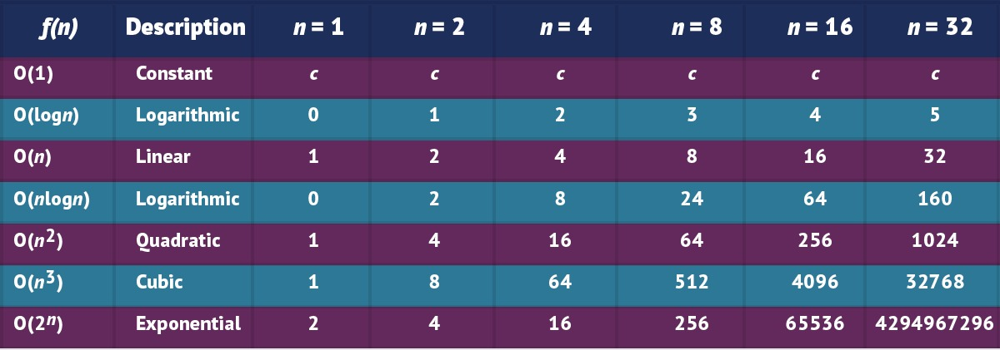

What is a data structure and how to write your first algorithm in Java
Java programmer use data structures to store and organize data, and we use algorithms to manipulate (操纵) the data in those structures. The more you understand about data structures and alogrithm, and how they work together, the more efficient your Java programs will be.
This tutorial launches a short series introducing data structures and algorithm. You’ll learn what a data structures is and how data structures are classified. You’ll also learn what an algorithm is, how algorithms are represented, and how to use time and space complexity functions to compare similar algorithm.
What is a data structures?
Data structures are based on abstract data type (ADT), which Wikipedia defines as follows:
(A) mathematical model for data types where a data type is defined by its behavior (semantics) from the point of view of a user of the data, specifically in terms of (从…方面) possible values, possible operations on data of this type, and the behavior of these operations.
An ADT doesn’t care about the memory representation of its values or how its operations are implemented. It’s like a Java interface, which is a data type that’s disconnected from any implementation. in contrast, a data structure is a concrete (实在的) implementatin of one or more ADTs, similar to how Java classes implements interfaces.
Examples of ADTs include Employee, Vehicle, Array, and List. Consider the List ADT (also know as the Sequence ADT), which describes an ordered collection of elements that share a common type. Each element in this collection has it own position and duplicate (复制) elements are allowed. Basic operations supported by the List ADT include:
- Creating a new and emtry list
- Appending a value to the end of the list
- Inserting a value within the list
- Deleting a value from the list
- Iterating over the list
- Destroying the list
Data structures that can implement the List ADT include fixed-size and dynamically sized one-dimensional arrays and singly-linked lists.
Classifying data structures
There are many kinds of data structures, ranging from single variables to arrays or linked lists of objects containing multiple fields. All data structures can be classified as primitives (原始的) or aggregates (聚集), and some are classified as containers.
Primitives vs aggregates
The simplest kind of data structures stores single data iterm; for example, a variable that stores a Boolean value or a variable that stores an integer. I refer to such data structures as primitives.
Many data structures are capable of storing multiple data items. For example, an array can store multiple data itemsi its various slots, and an object can store multiple data items via its fields. I refer to these data structures as aggregates.
All of the data structures we’ll look at in this series are aggregates.
Container
Anything from which data items are stored and retrieved could be considered a data structures. Examples include the data structures derived from the previously mentioned Employee, Vechile, Array, and List ADTs.
Many data structures are designed to describes various entities. Instances of an Employee class are data structures that exist to describe various employees, for instance. In contrast, some data structures exist as generic storage vessels (容器) for other data structures. For example, an array can store primitive values or object references. I refer to this letter category of data structures as containers.
As well as being aggregates, all of the data structures we’ll look at in this series are containers.
Data structures and algorithm in Java Collections
The Java Collections Framwork supports many kinds of container-oriented data strctures and associated algorithms.
Design patterns and data structures
It’s become fairly (相当地) common to use design patterns to introduce university students to data structures. A Brown University paper surveys (调查) serveral design patterns that are useful for designing high-quality data structures. Among other things, the paper demonstrates that the Adapter pattern is useful for designing stacks and queues. The demonstration code is shown in Listing 1.
Listing 1. Using the Adapter pattern for stacks and queues
1 | public class DequeStack implements Stack { |
Listing 1 excerpts (摘录) the Brown University paper’s DequeStack class, which demonstractes the Adapter pattern. Note that Stack and Deque are interfaces that describe Stack and Deque ADTs. MyDeque in a class that implements Deque.
Overriding interface methods
The original code that Listing 1 is based on didn’t persent the source code to Stack, Deque, and MyDeque. For clarity, I’ve introduced @Override annotations to show that all of DequeStack’s non-constructor methods override Stack method.
DequeStack adapts (改编) MyDeque so that it can implements Stack. All of DequeStack’s method are one-line calls to the Deque interface’s methods. However, there is a small wrinkle in which Deque exceptions are converted into Stack exceptions.
What is an algorithm?
Historically used as a tool for mathematical computation, algorithms are deeply connected with computer science, and with data structures in particular. An algorithm is a sequence of instructions that accomplishes (完成) a task in a finite period of time. Qualities of an algorithm are as follows:
- Receives zero or more inputs
- Produces at least one output
- Consists of clear and unambiguous (清晰的) instructions (指令)
- Terminates after a finite (有限的) number of steps
- Is basic enough that a person can carry it out using a pencil and paper
Note that while programs may be algorithmic. One example is a code sequence that prints a report. Mote famously, Euclid’s algorithm is used to calculate the mathematical greatest common divisor (最大公约数). A case could be even be made that a data structure’s basic operations (such as store value in array slot) are algorithms. In this series, for the most part, I’ll focus on higher-level algorithm used to process data structures, such as the Binary Search and Matrix Multiplication algorithms.
Flowcharts and pseudocode (伪码)
How do you represent an alogorithm? Writing code before fully understanding its underlying algorithm can lead to bugs, so what’s a beeter alternative? Two options are flowcharts and preudocode.
Using flowcharts to represent algorithms
A flowcahrt is a visual representation of an algorithm’s control flow. This representation illustrates (阐明) that need to be executed, decisions that need to be made, logic flow (for iteration and other purposes), and terminals that indicate (表明) start and end points. Figure 1 reveals the various symbols that flowcharts use to visualize algorithms.

Consider an algorithm that initializes a counter to 0, reads characters until a newline (\n) character is seen, increments the counter for each digit character that’s beed read, and prints the counter’s value after the newline character has been read. The flowchart in Figure 2 illustrates this algorithm’s control flow：

A flowchart’s simplicity and its ability to present an algorithm’s control flow visually (so that it’s is easy to folow) are its major advantages. Flowcharts also have several disadvantages (不利), however:
- It’s easy to introduce errors or inaccuracies (误差) into highly-detailed flowcharts because of the tedium (啰嗦) associated with drawing them
- It takes time to position, label, and connect a flowchart’s symbols, even using tools to speed up this process. This delay might slow your understanding of an algorithm
- Flowcharts belong to the structured programming (结构化编程) era and aren’t as useful in an object-oriented. In constract, the Unified Modeling Language (UML) is more appropriate for creating object-oriented visual representations.
Using pseudocode to represent algorithms
An alternative (可供替代的) to flowcharts is pseudocode, which is a textual representation of an algorithm that approximates (接近) the final souce code. Pseudocode is useful for quickly writing down an algorithm’s representation. Because syntax is not a concern, there are no hard-and-fast rules for writing pseudocode.
You should strive (努力) for consistency (一致性) when writing pseudocode. Being consistent will make it much easier to translate the pseudocode into actual source code. For example, consider the following pseudocode representation of the previous counter-oriented flowchart:1
2
3
4
5
6
7
8
9
10DECLARE CHARACTER ch = ''
DECLARE INTEGER count = 0
DO
READ ch
IF ch GE '0' AND ch LE '9' THEN
count = count + 1
END IF
UNTIL ch EQ '\n'
PRINT count
END
The pseudocode first presnets a couple of DECLARE statements that introduce variables ch and count, initialized to default values. It then presents a DO loop that executes UNTIL ch contains \n (the newline character), at which point the loop ends and a PRINT statement outputs count’s value.
For each loop iteration, READ causes a character to be read from the keyboard (or perhaps a file — in this case it doesn’t matter what constitues the underlying input source) and assigned to ch. If this character is a digit (ont of 0 through 9), count is incremented by 1.
Choosing the right algorithm
The data structures and algorithms you use critically (严重地) affect two factors in your applications:
- Memory useage (for data structures)
- CPU time (for algorithms that interact (互动) with those data structures)
It follows that you should be especially mindful of the algorithms and data structures you use for applications that will process lost of data. These include applications used for big data and the Internet of Things.
Balancing memory and CPU
When choosing a data structure or algorithm, you will somtimes discover an inverse relationship between memory useage and CPU time: the less memory a data structure uses, the more CPU time associated algorithms need to process the data structure’s data items. Also, the more memory a data structure uses, the less CPU time associated algorithems will nedd to process the data items-leading to faster algorithm results.
As much as possible, you should strive to balance memory use with CPU time. You can simplify this task by analyzing algorithm to determine their efficiency. How well does one algorithm preform against another of similar nature? Answering this question will help you make good choices given a choice between multiple algorithms.
Measuring algorithm efficiency
Some algorithms preform better than others. For example, the Binary Search algorithm is almost always more efficient than the Linear Search algorithm. You want to choose the most efficient algorithm for your application’s needs, but that choice might not be as obvious as you would think.
For instance, what does it mean if the Selection Sort algorithm takes 0.4 seconds to sort 10000 integers on a given machine? That benchmark is only valid for that particular machine, that particular implementation of the algorithm, and for the size of the input data.
As computer scientist, we use time complextiy and space complexity to measure an algorithm’s efficiency, distilling these into complexity functions to abstract implementation and runtime enviroment details. Conplexity functions reveal the variance in an algorithm’s time and space reuirements based on the amount of input data:
- A time-complexity function measures an algorithm’s time complexity — meaning how long an algorithm takes to complete
- A space-complexity function measures an algorithm’s space complexity — meaning the amount of memory overhead (开销) required by the algorithm to preform its task
Both complexity functions are based on the size of input (n), which somehow reflects the amount of input data. Consider the follwoing preudocode for array printing:1
2
3
4
5DECLARE INTEGER i, x[] = [ 10, 15, -1, 32 ]
FOR i = 0 TO LENGTH(x) - 1
PRINT x[i]
NEXT i
END
Time complexity and time-complexity functions
You can express the time complexty of this algorithm by specifying the time-complexity function $t(n) = an + b$, where $a$ (a constant multiplier) represents the amount of time to complete one loop iteration, and $b$ represents the algorithm’s setup time. In this example, the time complexity is linear.
The $t(n) = an + b$ function assumes that time complexity is measured in terms of a chronological (按时间顺序的) value (such as seconds). Because you’ll want to abstract machine details, you’ll often express time complexity as the number of setps to complete.
How we define a step can vary from (不同于) one algorithm to another. In this case, if you indentified the single print instruction as the program’s step, you would rewrite the time-complexcity function in terms of the printing step: $t(n) = n$; for $n$ arrays elements, $n$ steps are needed to print the array.
It’s important to take care when defining an algorithm’s steps, so that the definition is meaningful (有意义的) and correlates with the algorithm’s input size. For example, it makes sense to define printing as the steps for the array-printing algorithm, because printing dominates (控制) the runtime and depends on the input size (number of array elements to print).
It’s also possible to define steps in terms of comparisons (比较) and exchanges. In a sorting algorithm, for instance, you might define steps in terms of comparisons if comparisons dominate the runtime or exchanges dominate the runtime.
It’s fairly easy to choose a time-complexity function for the array-printing example, but it can be more difficult to find this function for more complicated algorithms. Use the following rules-of -thumb to simplify this task:
- Algorithms with single loops are typically linear — their time-complexity functions are specified in terms of $n$
- Algorithms with two nested loops are typically quadratic — their time-complexity functions are specified in terms of $n^2$
- Algorithms with a triply-nested loop are typically cubic — their time-complexity functions are spceified in terms of $n^3$
- The pattern continues with quadruply and higher nested loops
There rules-of-thumb (经验法则) work best when a loop executes $n$ times (where $n$ is the size of the input data). This isn’t always the case, however, as demonstrated by the Selection Sort algorithm represented in pseudocode below:1
2
3
4
5
6
7
8
9
10
11
12
13
14DECLARE INTEGER i, min, pass
DECLARE INTEGER x[] = [ ... ]
FOR pass = 0 TO LENGTH(x) - 2
min = pass
FOR i = pass + 1 TO LENGTH(x) - 1
IF x[i] LT x[min] THEN
min = i
END IF
NEXT i
IF min NE pass THEN
EXCHANGE x[min], x[pass]
END IF
NEXT pass
END
Because this algorithm consists of thw nested loops, you might think that its preformance is quadratic. That’t only partially correct, however, because the algorithm’s performanc depends on whether you choose comparisons (比较) or exchanges as the algorithm’s step:
- If you choose an exchange as one step (bacause you think that exchanges dominate the runtime) you end up with a linear time-complexity function bacause $n - 1$ exchagnes are required to sort $n$ data items. This function is specified as $t(n) = n - 1$.
- If you choose a comparison as one step (bacause you think that comparison deminate the runtime) you end up with $t(n) = (n - 1) + (n - 2) + … + 1$, which sortens to $t(n) = \frac{n^2}{2} - \frac{n}{2}$. Comparison occur in the inner loop, which executes $n-1$ times for the first outer loop iteration, $n-2$ for the second, and so on down to once for the final outer loop iteration.
Space complexity and space-complexity funtions
An algorithm’s space complexity indicates the amount of extra memory needed to accomplish its task. For printing an array, a constant amount of extra memory (for code storege, stack space to store the return address whwen PRINT is called, and space for varialbe i‘s value) is needed no matter how lager the array.
You can express the array-printing algorithm’s space complexity via space-complexity function $s(n) = c$, where $c$ signifies how much constant additional space is requried. This value represents overhead only; it doesn’t include space for the data being processed. In this case, it doesn’t include the array.
Space complexity is expressed in terms of mechine-independent memory cells instead of mechine-dependent bytes. A memory cell holds some kind of data. For the array-printing algorithm, i‘s memory cell stores an integer value.
Comparing algorithms
You use time complexity and space complexity functions to compare the algorihm to other of a similar nature (one sorting algorithm to another sorting algorithm, for example). In order to ensure a fair comparison, you must use the same definition for step and memory cell in each algorithm.
Even when you chosen identical (完全同样的) step an memory cell definations, however, comparing algorithms can still prove tricky (难办的). Because complexities are often nonlinear, an algorithm’s input size can greatly affect the comparison result. As an example, consider two time-compleity functions:
- $t_1(n) = 10n^2 + 15n$
- $t_2(n) = 150n + 5$
When $n$ equals 1, $t_1$ yields 25 steps, whereas $t_2$ yields 155 steps. In this case, $t_1$ is clearly better. This pattern continues until $n$ equals 14, at which point $t_1$ yields 2170 steps and $t_2$ yields 2105 steps. In this case, $t_2$ is the much better choice for this and successor value of $n$.
Using Big oh to represent upper bounds
Computer scientists commonly compare algorithms as $n$ tends (趋于) to infinity (无限); this is knwon as asymptotic analysic (渐近分析). Complexity functions serve as the upper bound (上界) of the algorithm’s asymptotic behavior (as $n$ approaches (接近) infinity), and a notation (标记法) called Big Oh is used to represent these upper bounds. Here’s the formal (正规的) defination for Big Oh:
A function $f(n)$ is $O(g(n))$ if and only if there exist two constants $c$ and $n_0$ such that $f(n) <= cg(n)$ for all $n >= n_0$
Note: $n$, $f(n)$, $c$, and $n_0$ must be positive.
$f(n)$ represents the algorithm’s computing time. When we say that this function is $O(g(n))$, we mean that (in terms of steps) it takes no longer than a constant multiplied by $g(n)$ for this function to execute. For example, here are the Big Oh notations for the previous time-complexity functions:
Simplifying Big Oh
It’s common to throw away all terms (条件) except the largest and any constant multiplier for the largest term when specifiying $g(n)$. For example, you would speicfy $O(n)$ instead of $O(150n + 5)$
Comparing algorithms with Big Oh
Suppose the Selection Sort algorithm if followed by the Array Printing algorithm. Because each algorithm offers it own time-complexity function, what is the overall time-complexity function for both algorithm? The answer is if $f_1(n) = O(g(n))$ and $f_2(n) = O(h(n))$ then:
Part A covers cases where algorithm follow each other sequentially. For the Selection Sort algorithm followed by the Array Printing algorithm, the overall time-complexity function is the maxinum of each algorithm’s time-complexity function, which happens to be $O(n^2)$ (assming that comparisons are the dominant steps).
Part B covers where one algorithm nests inside another. For example, suppose the Array Printing algorithm is called after Selection Sort performs an exchange. Assuming that the sort’s time-complxity function if $O(n^2)$ (comparisons are dominant), the overall time complexity changes to $O(n^3)$.
How do you choose an efficient algorithm that means your application’s needs? Start by obtaining the Big Oh-bounded time-complexity functions for the candidate algorithms being considered, then deciding the range of $n$ values that will be input to these functions (and, hence (因此), the algorithms).
Because it helps to see the impact (冲击) of various $n$ values in a tatular (表格式的) format, I’ve constructed a table that correlates the number of steps with common Big Oh-bounded time-complexity functions and various $n$ value. This table is presented in Figure 3.

The Big Oh-bouded time-complexity functions are sorted from the most efficient function (constant) at the top to the least efficient function (exponential 指数) at the bottom. As you move down the table, notice the functions becoming less efficient (with more steps to complete) for $n$ values starting at 16.
It would be great if all algorithm were $O(1)$ becuase the would all be equally efficient. Because this doesn’t happen in the real world, you need to carefully choose the most efficient algorithm based on Big Oh-bounded time-complexity functions and the desired range of $n$ values.
Keep in mind that more efficient algorithms may be harder to code than less efficient ones. If the range of $n$ input values doesn’t result in too many steps, you may find that it’s better to use a less efficient algorithm with a smaller input range than a more efficient algorithm with a lager input range. You’ll see an example of this in Part 2.